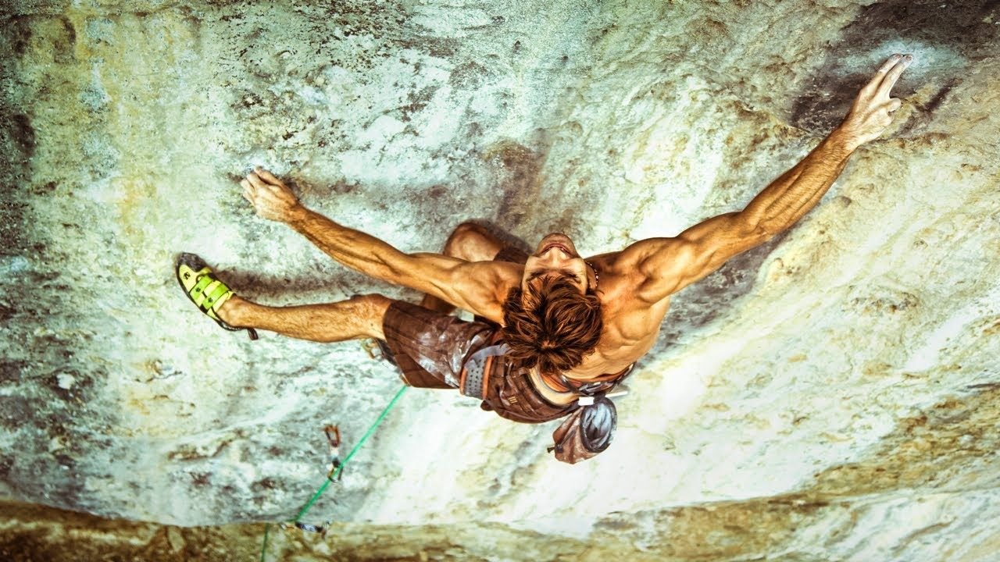
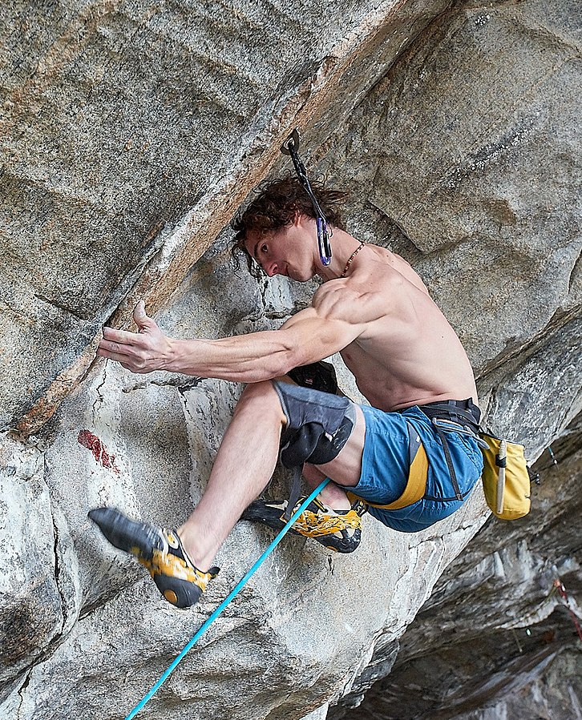
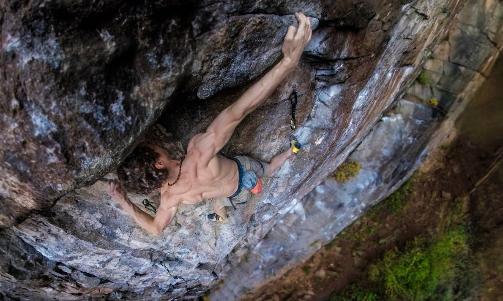

La Dura Dura - Oliana, Espanha
Essa rota já considerada por Ondra como o ápice de dificuldade que havia realizado.
Silence - Flatanger, Noruega
Atualmente, essa é a rota com a maior dificuldade que Ondra realizou.
Bohemian Rhapsody - Velká , República Checa
Ondra teve que esperar alguns meses para realizar esse projeto, devido as condições climáticas. Após 5 meses de espera, Ondra conseguiu as condições apropriadas.